There are a few options to downgrade the database from a higher version of SQL Server to a lower version of SQL Server. These options include:
- Configure product to the destination SQL Server , create product database and upload all historical data to it from the local repository folder with the Netwrix Auditor DB Importer tool (can be found in the product installation folder, by default: C:Program Files (x86)NetwrixActive Directory Auditing );
- Migrate database with Generate Scripts wizard of SQL Server Management Studio. For it please perform the following steps:
1. Script the schema of the database on the source SQL Server instance using the Generate Scripts wizard of the SQL Server Management Studio interface.
1.1 In Object Explorer connect to the SQL server, right-click database, expand Tasks and choose"Generate Scripts" " .
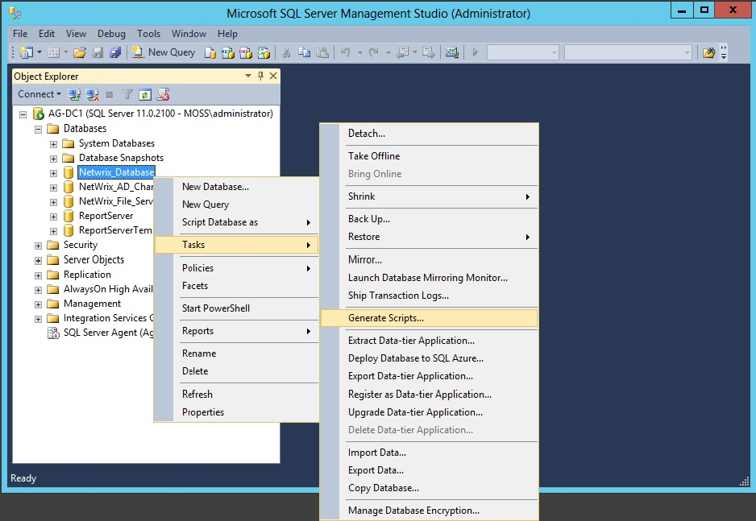
1.2 This launches Generate and Publish Scripts wizard. Click Next, to skip
the Introduction screen and proceed to the Choose Objects page.
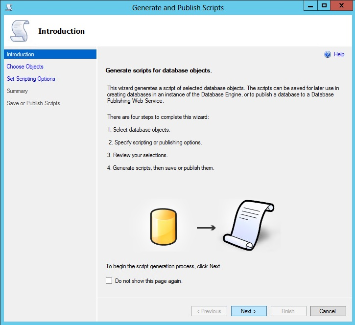
1.3 On the Choose Objects page, choose "Script entire database and all
database objects" , and then click Next to proceed to the "Set Scripting Options" page.
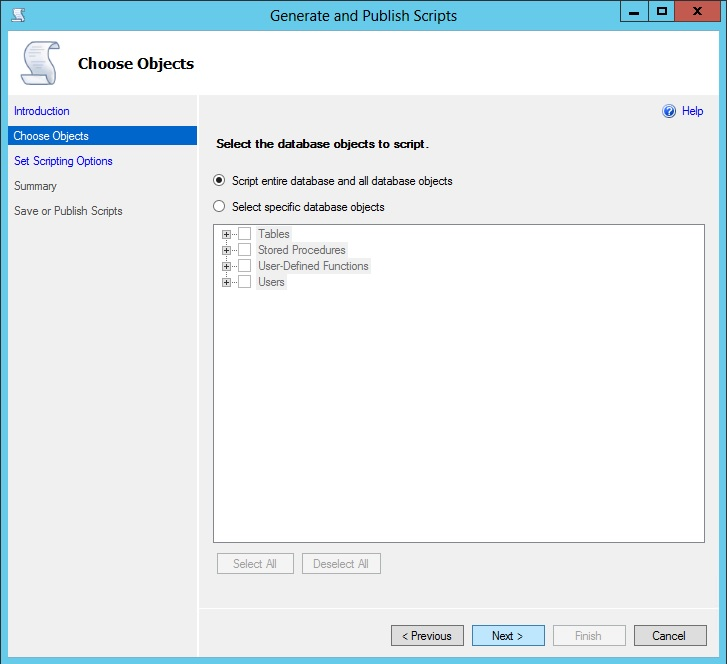
1.4 On the Set Scripting Options page, specify the location where you want
to save the script file, and then click the Advanced button.
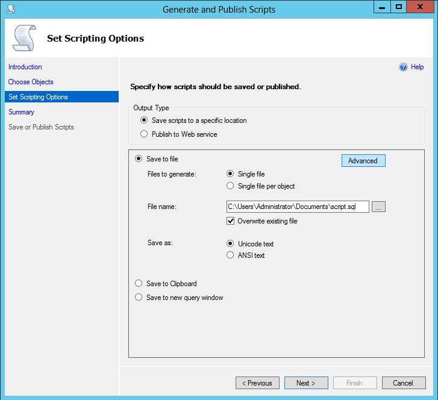
1.5 In the Advanced Scripting Options dialog box, set Script Triggers,
Indexes and Primary Key options to True, Script for Server Version to <version of the
destination SQL server instance>, and Types of data to script to Schema and Data. This
last option is key because this is what generates the data per table.
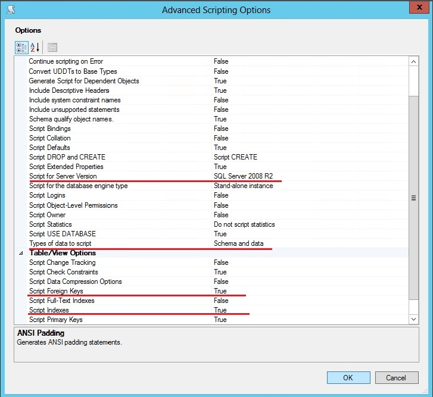
1.6 Once done, click OK, to close the Advanced Scripting Options dialog box
and return to the Set Scripting Options page. In the Set Scripting Options page, click
Next to continue to the Summary page.
1.7 After reviewing your selections on the Summary page, click Next to generate scripts.
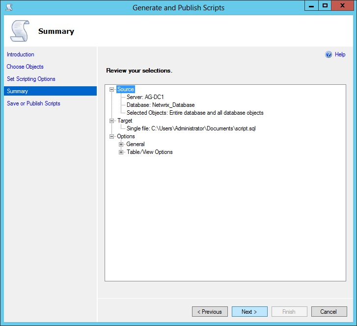
1.8 Once scripts are generated successfully, choose the Finish button to
close the Generate and Publish Scripts wizard.
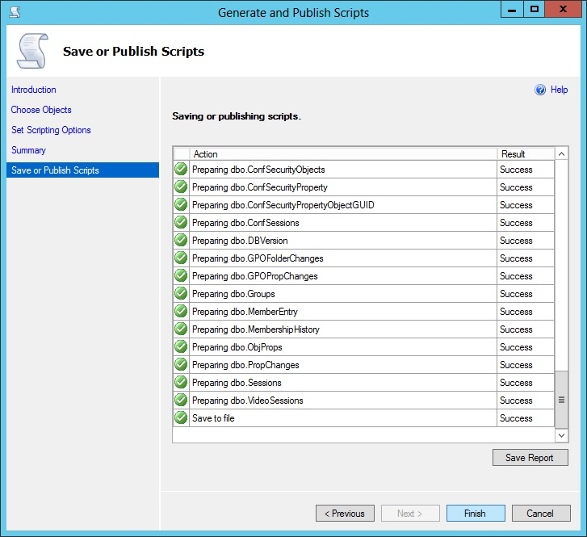
2. Connect to the destination SQL Server instance, and then run the SQL
scripts that were generated, to create the database schema and copy its data.
2.1 In Object Explorer connect to the destination SQL Server instance and then in SQL Server Management Studio open the SQL Server script you saved in Step-1.
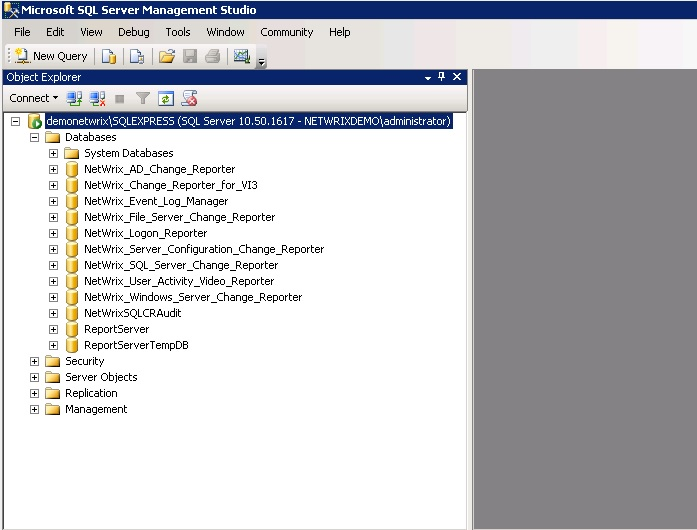 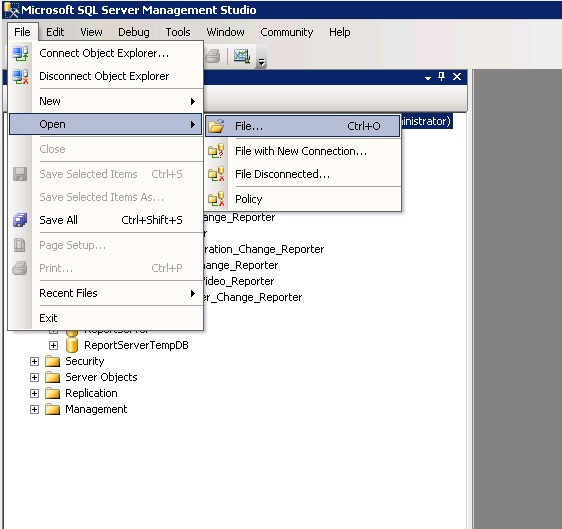
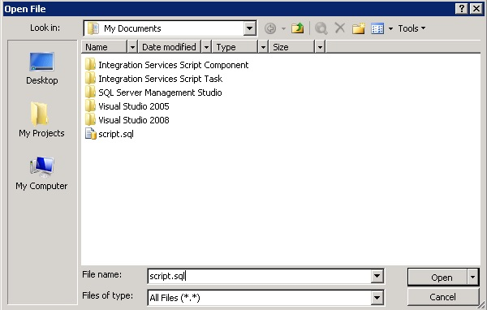
2.2. Modify the script, to specify the correct location for the database
data and log files. Once done, run the script to create the database on the destination
SQL Server instance.
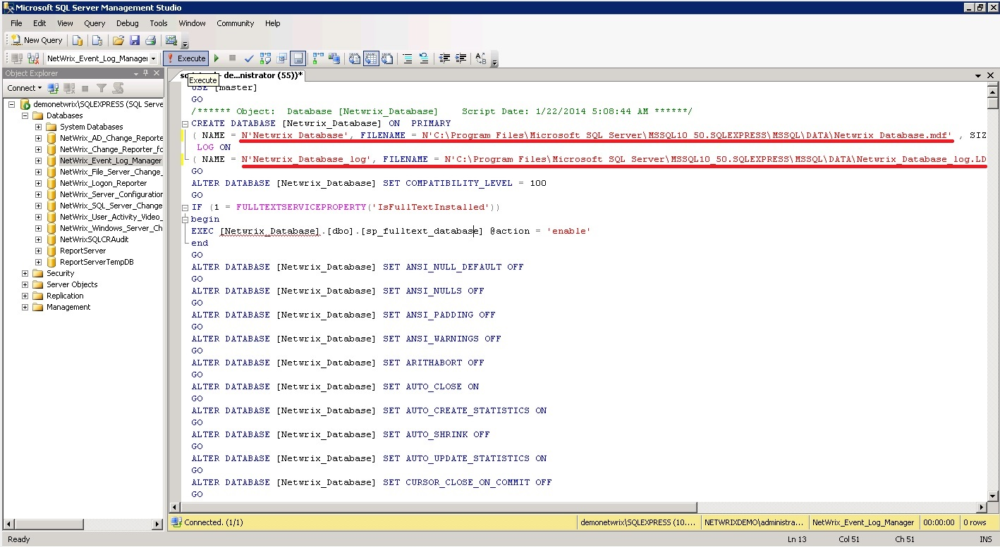
2.3 Upon successful execution, refresh the Database folder in Object
Explorer.